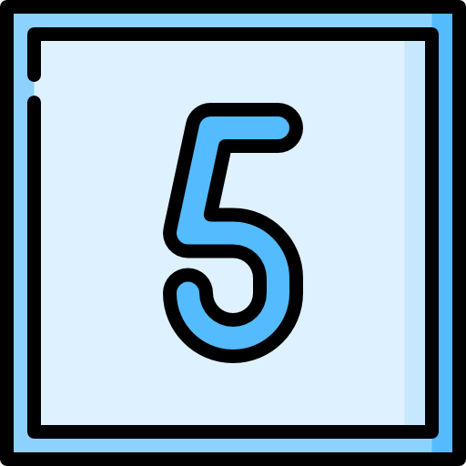
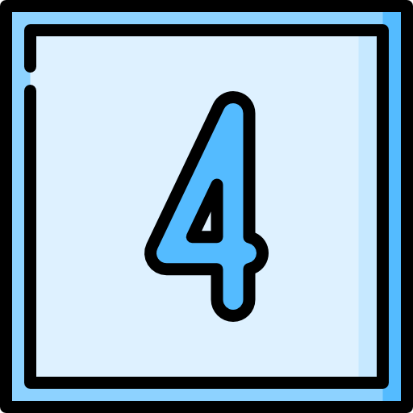
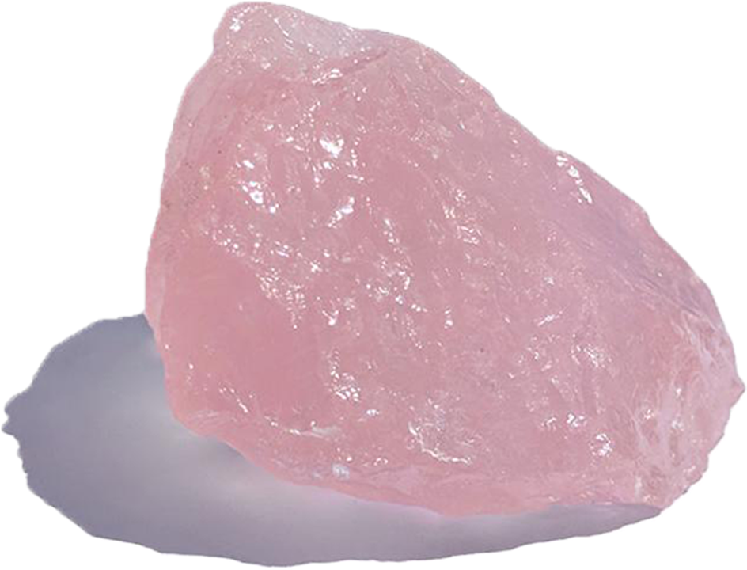

If you're human, chances are you've dealt with some kind of distress in your life. Sometimes this stress is caused by fluctuating hormones, or the fear of not being able to provide for your family, or not being able to complete a work task by your deadline. Wherever this stress came from, we all want the same thing; for it to go away and never come back.
Unfortunately, there's no magical way to make all your worries and stress melt away. But there are ways to essentially heal your mind; which is where the seed for this emotional rollercoster originally set up camp.
My anxiety began in childhood but was never really bad enough to cause much disturbance. It kicked in full force in the form postpartum anxiety 5 months after bringing my little guy into this world. It was the craziest onset of anxiety I had ever experienced. It was so bad that I was in one constant panic attack from sun up to sun down, and nothing I did helped.
It wasn't until I finally figured out how to let go that I found relief. Most anxiety is built up in your head, and that's the worst part, because that makes us feel like we're making ourselves feel this way, and who wants anxiety? It is, in some way, all in our heads, but it's not caused by us, it's caused by our thoughts.
We're all scared of something; worried, some of us even down right terrified. For me, I was scared of change, scared of not having a sufficient income, scared of never getting sleep and not eating enough and never getting any me-time. It really makes a huge difference when you ask yourself what it is that you're scared of, or what you're stressed about. Below I'm going to put every tip and trick that led me to being anxiety free almost immediately.
I can't stress enough how much journaling helps heal the mind. Talking about your thoughts and fears is a great way to get it all out. When you write down what's stressing you out, it not only releases the need to hold onto this information in your mind, but it gives you a place to store all these thoughts and emotions so you can essentially transfer them from your mind, into the journal.
When you have them written down, it gives your brain relief knowing you can come back to these thoughts in case you "forget them." Ultimately; forgetting these thoughts is almost always for the best, but it's a nice trick of the mind to have the option to come back to them later.
Holding in negative feelings can create big problems and even make existing conditions such as anxiety and depression become worse. If you don't have a family member or friend you're comfortable with, simply writing it down or talking to a free counselor can help.
Below is a free helpline if you need to talk to someone:
- National Alliance on Mental Illness (NAMI) Helpline: 1-800-950-NAMI (6264)
Affirmations are AMAZING! Anything you think or say is an affirmation. The more positive thoughts you think and the more positive things you say; the stronger your mind will grow. Try to tailor your affirmations to what you believe to be your biggest weaknesses.
- I am strong
- I'm in control of my fears
- I can change my life
If you're struggling with anxiety some good ones include:
- I am beautiful/attractive
- I am amazing
- I have greatness within me
If you struggle with self-esteem some good ones include
- I am happy
- My challenges bring me better opportunities
- I'm in control of my thoughts
If you're struggling with depression some good ones include
Essential oils have always been my go to for anxiety. They can be used topically (on the skin,) aromatically (diffused or smelled directly from the bottle,) and in some cases consumed by mouth. Here are a few of my favorites:
Lavender
Rubbed on the back of the neck or diffused.Citrus bliss (Doterra)
Rubbed on wrists and back of neck or diffused.Past tense (Doterra)
Rubbed on back of neck. NOT CONSIDERED SAFE WHILE PREGNANT OR BREASTFEEDING.Music can help distract you and convert your thinking over to a more positive place. Binaural beats are a fantastic stress relieving tool and can drastically reduce anxiety. For me, the sound of ocean waves, or rainfall were particularly helpful, as well as jungle sounds. Weightless by Marconi Union has also been shown to help with anxiety and stress.
I put together a page that includes 18 of my favorites here. You can hover over the images to see what sound it will bring you to, or you can click them to go directly to the music.
Sometimes we just need a little motivation! There's a ton of good videos on youtube with mashups of different speakers. Additionally, spotify has a few gems as well.
Yoga is a great way to free the body of stress and help you relax. Below are some poses that help specifically with anxiety:
Child's Pose can be done as shown; with your arms resting along your sides, or with your arms extended straight out above your head (refered to as the extended child's pose.)
The Legs Up the Wall Pose is an inversion pose in which you lie on the floor next to a wall and place your legs together vertically against the wall.
Seated Forward Fold gives the whole back of your body a good stretch, from your calves to your hamstrings and all across your spine. This can be done with a block (as shown,) or it can be done without a block with your spine and arms straight. Picture your posture forming a triange with the 3 points being your hips, your shoulders and where your hands meet your feet. The latter is refered to as the seated forward bend.
Cat-Cow is a gentle flow between two poses that warms the body and brings flexibility to the spine. It stretches the back torso and neck, and strengthens the abdominal organs. It also open the chest, encouraging the breath to become slow and deep.
The first post in the Cat/Cow variation is the cat (shown above.) The second pose is the cow, which is achieved by pulling your torso down with your back arched in the shape of a "u" rather than a "rainbow." Alternate between the two poses on inhale/exhale. Your head will face down during Cat, and up during Cow.
Corpse Pose is often refered to as the "Final Relaxation Pose." Because of this, it is usually the last pose in a yoga session to relax the body.
Lying on your back, let the arms and legs drop open, with the arms about 45 degrees from the side of your body. With your eyes closed, take slow deep breaths through your nose. Allow your body to become heavy, letting it relax into the floor. Scan the body from the tips of your toes, to the top of your head, looking for tension. Release and relax any areas that you find. If you need to, rock or wiggle parts of your body from side to side to encourage further release.
Image source: https://pachamamayogaretreats.com/
The 5-4-3-2-1 method helps to "ground" you and bring you into the present.
 SEE
Acknowledge 5 things around you that you can SEE. It can be a picture on the wall, the shoes you're wearing, a table or couch, clouds moving past, or a nearby tree.
 TOUCH
Acknowledge 4 things around you that you can TOUCH. It can be your own skin, the couch you're sitting on, your lips or hair, or your tongue running across the grooves in your teeth.
 HEAR
HEAR
Acknowledge 3 things around you that you can HEAR. It can be the sound of people talking or walking, a clock ticking, birds chirping outside, or the hum of cars driving past outside.
 SMELL
SMELL
Acknowledge 2 things around you that you can SMELL. You might walk to a bathroom to smell soap, outside to smell something in nature, lean over and smell a pillow on the couch, a pencil on the desk, or check to see how your deodorant is working today. Whatever it may be, take in the smells around you.
 TASTE
TASTE
Acknowledge 1 thing that you can TASTE. It might be the aftertaste of coffee, gum or your last meal. Or take a sip of water or grab a snack if it is handy.
This one might sound strange; but chewing gum can help distract you from your negative thinking patterns. It works similarly to the 5-4-3-2-1 method. While chewing the gum, focus on how it tastes, how it feels against your teeth, go over the grooves/teeth marks in the gum with your tongue and try to form a picture in your mind of what it looks like; almost like looking at the clouds and finding shapes that look like real things.
Meditation is very powerful. Not only will it help you relax and release stress, but it will help you become more in tune with your emotions and more comfortable in your own skin. I began meditation by using the app "Headspace." After I became more intermediate I started meditating on my own several times a day to prevent stressful situations from having a negative impact on my emotional state.
Singing very loudly can help if you're in a situation that you can. Belt out your favorite song, (preferably a happy song,) and focus on the words.
Going outside, or going for a drive can be very therapeutic. Sometimes being inside so much can cause anxiety to get much worse. Take a walk around the block, go for a quick jog through the neighborhood, drive to the store and grab a chocolate bar, anything that gets you out of the house.
Magnesium; especially if you're deficient, can help to naturally calm you down from the inside out. A lot of people don't get enough magnesium and don't even know it. I personally used this powdered magnesium that you add to water, and it tastes wonderful. I also found that it solved my constipation issues as well.
You'll want to be careful with this one because a lot of "alkaline" waters are not actually alkaline. Here's an example of alkaline water, what is does, and how to recognize the differences between real, and fake. If you have any questions about the Kangen system; I personally own one and am very educated on how they work. See the contact tab above.
Sometimes we don't have time to wait for natural treatments to take effect and that's ok! Your doctor can prescribe you a medication to take daily, or one to take as needed for your anxiety. Don't be afraid to ask for help, your mental health is very important!
Crystals are amazing for all different areas of life. A few of my favorites to meditate with when I'm feeling fearful or stressed are:
Blue lace agate
Blue Lace Agate will help you communicate, especially when you have exactly what you want to say all put together in your mind, but can't seem to put it into words. It's a very calming stone that will bring you a sense of balance and peace of mind. This stone is also amazing for emotional healing, with strong metaphysical properties.Citrine
This stone is great for removing negative energies and bringing in positivity. It can relieve depression, self-doubt, anger, and curbs mood swings. Citrine is well known for its energies in manifesting your biggest dreams and bringing in more success and prosperity.Rose Quartz
Rose quartz has very soothing properties. This stone can help tremendously with learning how to forgive others for things they have done that hurt you. It clears out anger, jealousy, and resentment of others, and allows healing of the heart and feelings associated with holding on to such negative emotions. This one in particular is great for break ups.Lepidolite
Lepidolite eases stress and aids in emotional healing. It's an extremely calming stone that will help you if you are feeling anxious, stressed or depressed. It contains lithium with makes it one of the best stones for stressful situations and it has a positive vibration that stimulates our sense of positivity.Reiki is essentially a spiritual massage for your soul. During a reiki session a therapist channels energy into your chakras by means of touch, to activate the natural healing processes of your body and restore physical and emotional well-being. They will usually have you lie down on a heated table with a pillow under your knees for added comfort. As soothing music plays they will begin at your head and make their way to your feet. They typically spend 3-7 minutes on each area. As the energy flows through you; you will feel a sense of relaxation. It feels like warm sun rays beaming through your body. If your mind starts to wander try visualizing yourself walking through doorways into new areas or strolling alongside a river.